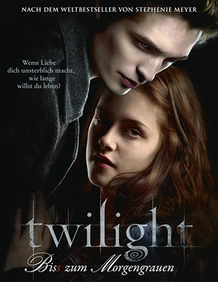
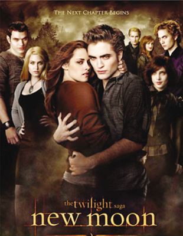
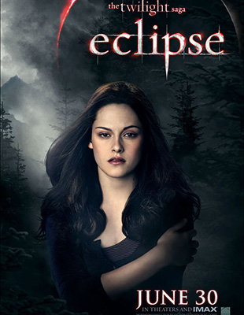
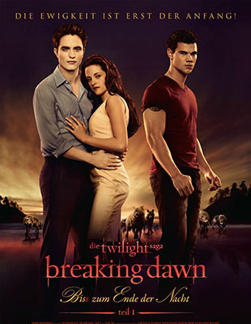
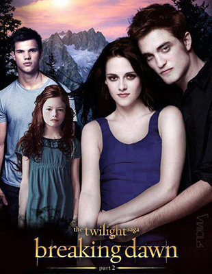

- 
- 
- 
- 
- 
| 《暮色》 | 在这个世界上我只喜欢三件事，太阳、月亮和你，太阳是为了白天而存在，月亮是为了夜晚，而你对我来说却是永恒的。 |
| 《新月》 | 俯瞰“暮色”的风景，在漆黑的夜空上挂着一轮新月。无论遇到什么困难，只要在一起是真实的，爱德华与贝拉就能够去勇敢迎接命运，与命中注定的爱人一起并肩面对一切。 |
| 《月食》 | 冰与火的矛盾不可调和，在爱与牺牲的天平上，贝拉发现她所要奉献的不只是灵魂。 |
| 《破晓》 | 当你深爱着准备取你性命的人时，你已没有选择的余地了。对于贝拉来说，无可救药地爱上爱德华之后，就像是在越来越危险的现实中编织了幻想与梦魇。她是加入这黑暗却充满诱惑的世界，还是追求一个全然的人类生命，不管她作出什么样的抉择，都将不可避免地牵动着两个族群的命运。 |